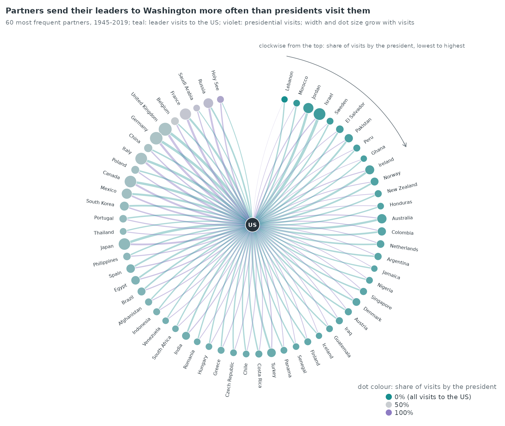
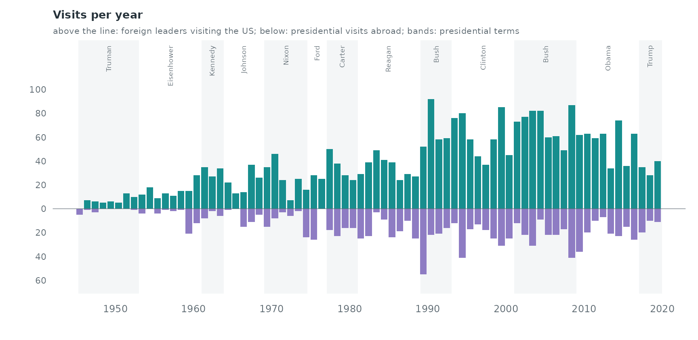
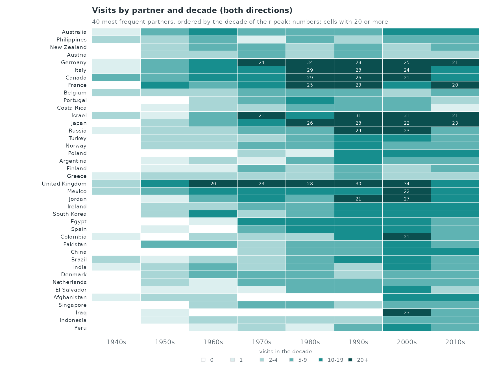
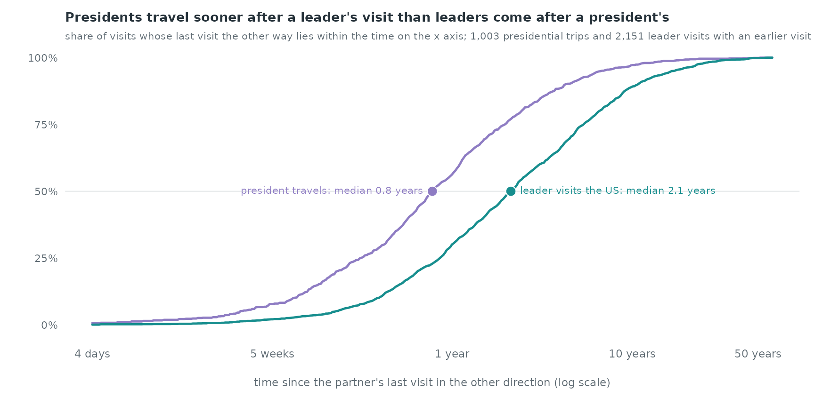
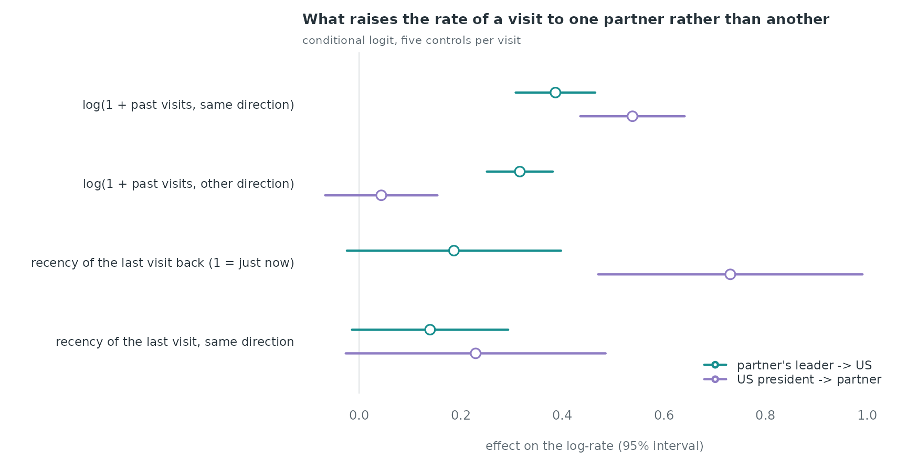
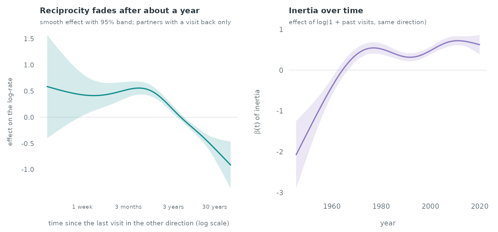

Case study: leader visits to and from the United States, 1945–2019
Source:vignettes/articles/case-diplomacy.Rmd
case-diplomacy.RmdLeader visits to and from the United States
us_leader_visits lists every visit by a foreign head of
state or government to the United States, and every foreign trip of a US
president, from July 1945 to December 2019 (Harvard Dataverse, CC0).
Each row is a directed event: the visitor’s country is the
sender, the host the receiver. This case study
asks whether a visit in one direction raises the rate of a visit back,
how long that effect lasts, and how much of a partner’s rate is carried
by its own past visits.
The data
data(us_leader_visits)
v <- us_leader_visits
v$partner <- ifelse(v$sender == "United States", v$receiver, v$sender)
c(visits = nrow(v), to_us = sum(v$direction == "to_us"),
from_us = sum(v$direction == "from_us"))
#> visits to_us from_us
#> 3945 2876 1069The 3,945 visits involve 196 partner countries. The bundled table
uses one name per country across its two source tables (see
?us_leader_visits), which reciprocity needs: a visit and
the visit back must name the same partner.
Every event has the United States at one end, so the network is a star. What the model can learn is which partner, in which direction, and when: given that a foreign leader visits Washington at time t, why that country rather than another; given that the president travels, why to that country.

Leaders come to the United States more often than presidents travel: 72.9% of the visits are to the US, and 56 of the 60 partners in the figure send more leaders to Washington than they receive presidents. The partners whose share of presidential visits is highest are Holy See, Russia, Saudi Arabia.
Visits over time

Visits to the US rise from about 10 a year in 1945–1959 to about 66 a
year in 1990–2009. Presidential travel grows too, and it comes in
bursts: a single trip covers several countries, so several
from_us events share a few days.
The number of countries exchanging a visit with the United States within a two-year window grows from 11 in 1945-1946 to a maximum of 104 in 2013-2014.

Of the 40 partners, 11 have their busiest decade in the 1980s or earlier and 20 in the 2000s or 2010s (United Kingdom, Mexico, Jordan, Ireland, South Korea, Egypt, Spain, Colombia). 6 of them have no visit before 1960, among them Portugal, Poland, Egypt, China, Singapore.
Reciprocity: how long after a visit does the visit back come?
For every visit we measure the time since the last visit in
the opposite direction with the same partner
(reciprocity_time_recent). Visits with no earlier visit in
the other direction are counted separately.
ev <- v[order(v$time), c("sender", "receiver", "time", "direction", "partner", "year")]
lag <- endogenous_features(ev, stats = c("reciprocity_time_recent", "recency"))
lag$gap_years <- lag$reciprocity_time_recent / 365.25
tapply(is.na(lag$gap_years), lag$direction, mean)
#> from_us to_us
#> 0.06173994 0.25208623
When the president travels to a country, the last visit of that country’s leader to the US is a median of 0.8 years back (56.2% within a year). A leader’s visit to the US comes a median of 2.1 years after the last presidential visit to that country. These raw lags mix reciprocity with how often each partner visits at all; the model below separates the two.
Case-control design
The risk set follows the star. For a visit to the
US, the controls are other countries that could have sent their leader
at that moment; for a presidential visit, other countries the president
could have gone to. We sample each direction separately with
mode = "two" (the US is the only receiver of
to_us visits and the only sender of from_us
visits, so a control changes only the partner) and
scope = "appearance" (a country enters the risk set after
its first visit in that direction, which keeps out states that do not
exist yet). Five controls per visit.
el <- ev[, c("sender", "receiver", "time")]
cc_to <- sample_non_events(el[ev$direction == "to_us", ], n_controls = 5, mode = "two",
scope = "appearance", seed = 1)
cc_fr <- sample_non_events(el[ev$direction == "from_us", ], n_controls = 5, mode = "two",
scope = "appearance", seed = 2)
cc_to$dir <- "to_us"; cc_fr$dir <- "from_us"
cc_fr$stratum <- cc_fr$stratum + max(cc_to$stratum)
cc <- rbind(cc_to, cc_fr)
c(strata = length(unique(cc$stratum)), rows = nrow(cc))
#> strata rows
#> 3945 23660The statistics are computed for every row against the observed visits
of both directions (history_log), so a control is scored on
the real history only. Visits on the same day are not separated: a
statistic counts earlier rows of the same day. With daily dates and one
visit per partner per day in all but 19 cases, this affects almost no
row.
cc <- endogenous_features(cc, history_log = el,
stats = c("sender_outdegree", "receiver_indegree", "reciprocity_count",
"reciprocity_time_recent", "recency"))
to_us <- cc$dir == "to_us"
cc$inertia <- log1p(ifelse(to_us, cc$sender_outdegree, cc$receiver_indegree)) # partner's past visits, same direction
cc$recip <- log1p(cc$reciprocity_count) # past visits in the other direction
cc$recip_recent <- transform_recency(cc$reciprocity_time_recent, half_life = 365.25)
cc$recip_recent[is.na(cc$recip_recent)] <- 0 # 1 just after a visit back, 0.5 after a year
cc$same_recent <- transform_recency(cc$recency, half_life = 365.25)
cc$same_recent[is.na(cc$same_recent)] <- 0
for (k in c("inertia", "recip", "recip_recent", "same_recent")) {
cc[[paste0(k, "_to")]] <- cc[[k]] * to_us
cc[[paste0(k, "_from")]] <- cc[[k]] * !to_us
}Linear model
Each statistic gets its own coefficient in each direction (a stratum holds one direction only, so the direction itself cancels).
covs <- c("inertia_to", "recip_to", "recip_recent_to", "same_recent_to",
"inertia_from", "recip_from", "recip_recent_from", "same_recent_from")
fit <- rem(reformulate(covs, response = "event"), data = cc, method = "clogit")
ct <- summary(fit$fit)$coefficients
est <- ct[, "coef"]; se <- ct[, "se(coef)"]
round(cbind(estimate = est, se = se), 2)
#> estimate se
#> inertia_to 0.39 0.04
#> recip_to 0.32 0.03
#> recip_recent_to 0.19 0.11
#> same_recent_to 0.14 0.08
#> inertia_from 0.54 0.05
#> recip_from 0.04 0.06
#> recip_recent_from 0.73 0.13
#> same_recent_from 0.23 0.13
For a visit to the US, each unit of
log(1 + the partner's earlier visits to the US) multiplies
the rate by 1.47, and each unit of
log(1 + earlier presidential visits to the partner) by
1.37. A presidential visit in the past year raises the rate of a visit
back by a factor of 1.21 at recency 1. For presidential trips, the
recency of the partner’s last visit to Washington multiplies the rate by
2.08, and the president’s own recent visit to the same country by
1.26.
How fast reciprocity fades, and how inertia changes over the decades
The recency weight above fixes a one-year half-life. A smooth term
lets the data choose the shape: nl() of the log-time since
the last visit in the other direction, for visits with such a visit,
next to an indicator for partners without one. tv(inertia)
lets the inertia effect change over the 75 years. The gam
backend uses one control per visit.
cc$gap <- log10(pmax(cc$reciprocity_time_recent, 1) / 365.25) # log10 years
cc$never <- as.numeric(is.na(cc$gap))
cc$gap[is.na(cc$gap)] <- log10(80)
cc$year <- 1945.537 + cc$time / 365.25
w <- widen_case_control(cc, covariates = c("inertia", "gap", "never", "year"))
gfit <- rem(~ never + nl(gap, k = 6) + tv(inertia, k = 6), data = w, method = "gam", time = "year")
summary(gfit)$s.table
#> edf Ref.df Chi.sq p-value
#> s(.X_gap):.I 3.791495 4.430045 103.7569 0
#> s(.time):inertia 5.565339 5.907729 280.6989 0
The smooth reciprocity effect falls by 0.77 on the log scale between a visit back three months ago and one ten years ago. The inertia coefficient is -0.41 around 1960 and 0.72 around 2010.
What the design leaves out
-
Global effects. Within a stratum every row has the
same time, so a covariate that depends on time alone (the president in
office, the year) cancels. The overall rate of visits in each presidency
would need time-shifted sampling (
shift = "exponential"); see the email and the clock case study. -
Trips. A presidential trip to several countries
appears as several
from_usevents a few days apart; each is scored against the history before it, so the second stop of a trip sees the first.